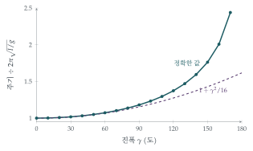

STEP III 1998, 문제 11
계속 읽기 전에 문제를 먼저 읽어 보자. 문제는 STEP Support Programme의 문제 데이터베이스에 있다: step.maths.org/questions/98-s3-q11
도입
물리를 배우는 학생이라면 누구나 진자(pendulum)의 주기(period)가 흔들림의 크기와 상관없이 \(2\pi\sqrt{l/g}\)라고 배운다. 갈릴레이(Galileo)는 피사 대성당에서 흔들리는 등잔의 시간을 자기 맥박으로 재어 본 뒤 이 사실을 믿게 되었다고 전해지며, 진자시계가 작동하는 것도 바로 이 성질 덕분이다. 그러나 이것은 엄밀하게는 참이 아니다. 이 공식은 근사(approximation) \(\sin\theta \approx \theta\)에서 나온 것이며, 큰 호를 그리며 흔들리는 진자는 시간이 더 오래 걸린다. \(90^\circ\)에서는 주기가 \(18\%\) 더 길고, 거의 거꾸로 선 위치에서 놓은 진자는 얼마든지 오래 걸릴 수 있다.
이 문제에서는 정확한 주기를 적분으로 구하고, 이어서 적당한 크기의 흔들림에 대한 첫 번째 보정 항을 구한다. 이 적분은 초등함수로 계산할 수 없다. 이것은 타원적분(elliptic integral)이며, 이러한 적분을 길들여 온 이야기는 가우스(Gauss)의 산술기하평균에서 시작하여 타원곡선 이론에까지 이른다.
시작하기 전에
추는 반지름이 \(l\)인 원 위를 움직인다. \(\theta\)와 \(\dot\theta\)로 나타내면 추의 속력과 (가장 낮은 점을 기준으로 한) 높이는 각각 얼마인가?
속력은 \(l\dot\theta\)이고, 가장 낮은 점으로부터의 높이는 \(l(1 - \cos\theta)\)이다. 줄은 일을 하지 않으므로(장력이 항상 운동 방향에 수직이므로) 에너지는 보존된다.
차근차근 풀기
단계 1 에너지
최대 각 \(\gamma\)에서 추는 순간적으로 정지한다. 에너지 보존(conservation of energy)에 의해 \[\tfrac12ml^2\dot\theta^2 + mgl(1 - \cos\theta) = mgl(1 - \cos\gamma),\] 이고, \(ml\)로 나누면 \(\frac12l\dot\theta^2 = g(\cos\theta - \cos\gamma)\)이다.■
단계 2 적분으로 나타낸 주기
\(\cos\theta - \cos\gamma\)를 반각으로 어떻게 나타낼 수 있는가? 또 \(\theta = 0\)에서 \(\theta = \gamma\)까지 가는 데 주기의 얼마만큼이 걸리는가?
\(\cos\theta = 1 - 2\sin^2\frac\theta2\)를 이용하면 \(\cos\theta - \cos\gamma = 2\bigl(\sin^2\frac\gamma2 - \sin^2\frac\theta2\bigr)\)이므로 \[\dot\theta = 2\sqrt{\frac gl}\,\Bigl(\sin^2\frac\gamma2 - \sin^2\frac\theta2\Bigr)^{1/2}.\] 대칭성에 의해 \(0\)에서 \(\gamma\)까지 흔들리는 데 주기의 4분의 1이 걸리므로 \[P = 4\int_0^\gamma\frac{\mathrm{d}\theta}{\dot\theta} = 2\sqrt{\frac lg}\int_0^\gamma\Bigl(\sin^2\frac\gamma2 - \sin^2\frac\theta2\Bigr)^{-1/2}\mathrm{d}\theta. \qed\]
단계 3 특이점 없애기
피적분함수는 \(\theta = \gamma\)에서 무한대가 된다. \(k = \sin\frac\gamma2\)로 두고 \(\sin\frac\theta2 = k\sin\phi\)로 치환하자. \(0 \leq \theta \leq \gamma\)에 대응하는 \(\phi\)의 범위는 무엇인가? 피적분함수는 어떻게 되는가?
\(\theta\)가 \(0\)에서 \(\gamma\)까지 변할 때 \(\phi\)는 \(0\)에서 \(\frac\pi2\)까지 변한다. 미분하면 \(\frac12\cos\frac\theta2\,\mathrm{d}\theta = k\cos\phi\,\mathrm{d}\phi\)이므로 \[\mathrm{d}\theta = \frac{2k\cos\phi\,\mathrm{d}\phi}{\cos\frac\theta2} = \frac{2k\cos\phi\,\mathrm{d}\phi}{\sqrt{1 - k^2\sin^2\phi}}.\] 한편 \(\sin^2\frac\gamma2 - \sin^2\frac\theta2 = k^2(1 - \sin^2\phi) = k^2\cos^2\phi\)이다. 성가신 인수들이 약분된다. \[P = 2\sqrt{\frac lg}\int_0^{\pi/2}\frac{1}{k\cos\phi}\cdot\frac{2k\cos\phi}{\sqrt{1 - k^2\sin^2\phi}}\,\mathrm{d}\phi = 4\sqrt{\frac lg}\int_0^{\pi/2}\frac{\mathrm{d}\phi}{\sqrt{1 - k^2\sin^2\phi}}.\] \(k < 1\)이므로 새 피적분함수는 아무 문제 없이 잘 정의된다. 이렇게 특이점(singularity)이 사라진다.
단계 4 첫 번째 보정
\(k\)가 작을 때 \((1 - k^2\sin^2\phi)^{-1/2}\)를 이항정리(binomial theorem)로 전개하라. \(\int_0^{\pi/2}\sin^2\phi\,\mathrm{d}\phi\)의 값은 얼마인가?
1차까지 \((1 - k^2\sin^2\phi)^{-1/2} \approx 1 + \frac12k^2\sin^2\phi\)이고 \(\int_0^{\pi/2}\sin^2\phi\,\mathrm{d}\phi = \frac\pi4\)이다. 따라서 \[P \approx 4\sqrt{\frac lg}\Bigl(\frac\pi2 + \frac{k^2}{2}\cdot\frac\pi4\Bigr) = 2\pi\sqrt{\frac lg}\Bigl(1 + \frac{k^2}{4}\Bigr).\] \(\gamma\)가 작으면 \(k = \sin\frac\gamma2 \approx \frac\gamma2\)이므로 \(k^2 \approx \frac{\gamma^2}{4}\)이고 \[P \approx 2\pi\sqrt{\frac lg}\Bigl(1 + \frac{\gamma^2}{16}\Bigr). \qed\] \(20^\circ\)의 흔들림(\(\gamma \approx 0.35\))에서는 보정이 \(1\%\)보다 작고, \(60^\circ\)에서는 약 \(7\%\)이다(그림 11.3.1).

돌아보기
에너지는 제1적분(first integral)을 준다. 2계 방정식이 1계 방정식이 되었고, 주기는 적분이 되었다.
치환으로 특이점을 길들인다. 피적분함수가 되돌아오는 점에서 발산했지만, 치환 \(\sin\frac\theta2 = k\sin\phi\)가 문제를 없앴다.
먼저 정확하게, 그다음에 근사로. 정확한 공식을 구한 뒤 이를 전개했으며, 이를 통해 근사가 얼마나 좋은지도 알 수 있다.
숨은 수학
타원적분
적분 \[K(k) = \int_0^{\pi/2}\frac{\mathrm{d}\phi}{\sqrt{1 - k^2\sin^2\phi}}\] 을 제1종 완전타원적분(complete elliptic integral of the first kind)이라 한다. 이런 이름이 붙은 것은 이와 가까운 적분이 타원의 둘레를 주기 때문이다. 정확한 주기는 \(P = 4\sqrt{l/g}\,K\bigl(\sin\frac\gamma2\bigr)\)이다. 피적분함수를 끝까지 전개하고 4.4 절의 월리스 적분(Wallis integrals) \(\int_0^{\pi/2}\sin^{2n}\phi\,\mathrm{d}\phi\)를 이용하여 항별로 적분하면 \[P = 2\pi\sqrt{\frac lg}\Bigl(1 + \bigl(\tfrac12\bigr)^2k^2 + \bigl(\tfrac{1\cdot3}{2\cdot4}\bigr)^2k^4 + \bigl(\tfrac{1\cdot3\cdot5}{2\cdot4\cdot6}\bigr)^2k^6 + \cdots\Bigr).\] 을 얻는다. 익숙한 함수들을 유한 번 조합해서는 \(K(k)\)를 얻을 수 없다. 이것은 진정으로 새로운 함수이다.
가우스의 놀라운 공식
\(K\)를 계산하는 훨씬 더 좋은 방법이 있다. 2.6 절에서 산술기하평균(arithmetic–geometric mean)을 만났다. \(a\)와 \(b\)에서 시작하여, 이 둘을 산술평균과 기하평균으로 바꾸는 일을 되풀이하는 것이다. 가우스는 1799년에 \[K(k) = \frac{\pi}{2\,\mathrm{AGM}\bigl(1, \sqrt{1 - k^2}\bigr)},\] 임을 발견했다. 따라서 진폭이 \(\gamma\)인 진자의 주기는 정확히 \[P = \frac{2\pi\sqrt{l/g}}{\mathrm{AGM}\bigl(1, \cos\frac\gamma2\bigr)}.\] 이다. AGM은 매우 빠르게 수렴(converge)하기 때문에, 약 \(160^\circ\)까지의 흔들림에서는 서너 단계만으로 주기를 유효숫자 열 자리까지 얻을 수 있으며, 그림 11.3.1의 값들도 이 방법으로 계산했다. \(180^\circ\)에 더 가까워지면 두 출발값 \(1\)과 \(\cos\frac\gamma2\)가 멀리 떨어져 있어 한두 단계가 더 필요하지만, \(179^\circ\)에서도 다섯 단계면 충분하다. 가우스는 일기에 이 발견이 “해석학의 완전히 새로운 분야를 연다”고 적었고, 그의 말은 옳았다. 타원적분의 역함수를 생각한 아벨(Abel)과 야코비(Jacobi)는 타원함수(elliptic functions)에 이르렀고, 타원함수는 다시 타원곡선(elliptic curves)으로 이어졌다. 타원곡선은 오늘날 수론(number theory)의 중심에 있으며(페르마(Fermat)의 마지막 정리를 증명하는 열쇠였다), 인터넷의 보안을 지키는 암호(cryptography)에서도 핵심적인 역할을 한다.
진자의 주기가 진폭에 의존하지 않는다는 갈릴레이의 주장은 1602년 무렵에 나온 것으로, 그가 연구한 작은 흔들림에서는 좋은 근사였다. 하위헌스(Christiaan Huygens)는 이것이 정확하지 않다는 것을 깨달았고, 1659년에 주기가 진짜로 진폭과 무관해지는 곡선을 찾아냈다. 그것이 바로 11.4 절의 주제인 사이클로이드(cycloid)이다. 1656년부터 만들어진 그의 진자시계는 시간 측정의 오차를 하루 약 15분에서 약 15초로 줄였다. 바다에서 경도를 구하는 문제를 해결한 항해용 크로노미터는 훗날 진자를 아예 쓰지 않게 되었지만, 진자시계는 1920년대까지 세계에서 가장 정확한 시계로 남아 있었다.
사고 기술
어떤 양이 계산할 수 없는 적분으로 주어지면, 그 적분을 다루기 좋은 꼴로 변형한 다음 피적분함수를 전개하여 항별로 적분하라.
이것은 물리학자들이 이상화된 결과에 대한 보정을 구하는 방법이며, 섭동 이론(perturbation theory)의 출발점이다. 대학에서는 항별 적분(term-by-term integration)이 언제 정당화되는지(균등수렴(uniform convergence)), 그리고 중간에 멈추었을 때 생기는 오차를 어떻게 추정하는지 배우게 된다.
더 도전하기
줄에 매인 입자. STEP III 2015, 문제 9에 도전해 보라. 작은 진동에서도 주기가 진폭에 의존하는 진동자를 다룬다. 진자의 주기는 그렇지 않은데, 이 진동자의 주기는 왜 그런가?
다음 항. 이항 전개를 한 항 더 진행하여 \(P \approx 2\pi\sqrt{\frac lg}\bigl(1 + \frac{\gamma^2}{16} + \frac{11\gamma^4}{3072}\bigr)\)임을 보여라.
손으로 하는 AGM. AGM을 세 단계 이용하여 진폭이 \(90^\circ\)인 진자의 주기를 추정하고, 그림의 값 \(1.1803\)과 비교하라.
시계. 어떤 진자시계가 진폭 \(4^\circ\)에서 정확한 시간을 가리키도록 맞추어져 있다. 진폭이 \(5^\circ\)로 커지면 하루에 몇 초가 늦어지는가?
더 읽을거리
David Morin, Introduction to Classical Mechanics (Cambridge University Press), 4장. 진폭이 큰 진자를 다룬다.
Jonathan Borwein & Peter Borwein, Pi and the AGM (Wiley). 가우스의 발견과 그 활용을 다루며, \(\pi\)를 계산하는 가장 빠른 방법들도 소개한다.
Dava Sobel, Longitude (Fourth Estate). 진자를 넘어선, 바다 위에서의 시간 측정 이야기(경도).